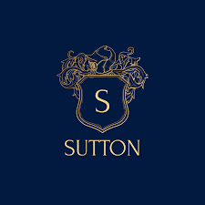
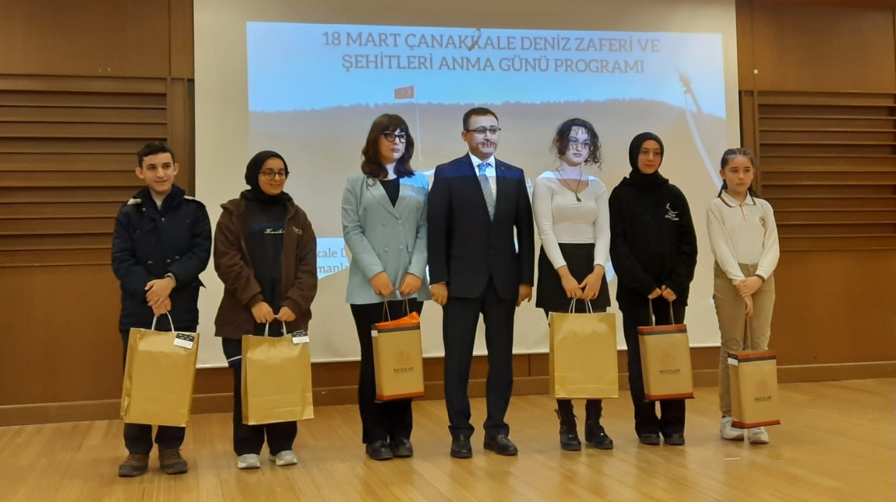

25 Eylül 2007 Tarihinde güngören de doğdu aslen kastamonuludur.Anne tarafi ise trabzonlu olan sefa ünsal ilköğretimini Tiryaki Hasan Paşa İlkokulunda tamamlamiştir.
Daha sonra Mahir İz ortaokulunda ortaöğrenimini görmüştür.Burada 5. sinifta şiir hayatina başlamiş ve ilk başta okul çapinda taninmiş okul içinde birçok tiyatro oyununa katilmiştir.
Ortaokulda genellikle aşk üzerine şiir yazan sefa ünsal 6. sinifta kompozisyon alaninda ilk başarisini almiştir.Ayni zamanda daha 6. sinifta farsça ilgisini çekmiş ve Divan ile ilgilenmiştir
